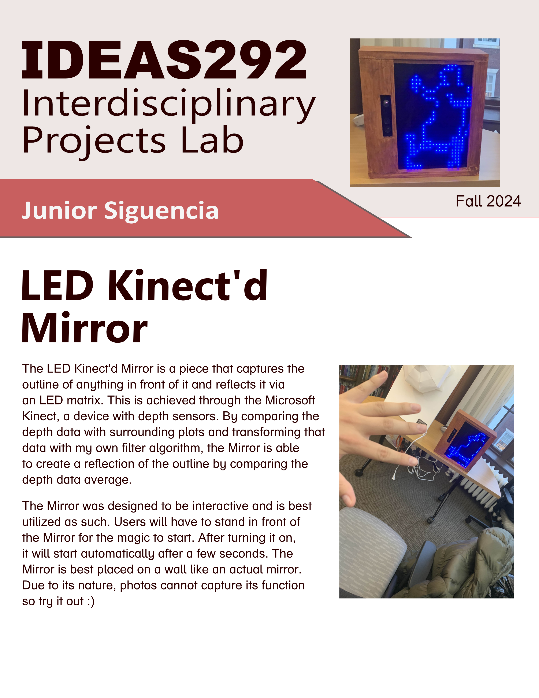

<!DOCTYPE html>
<html>
    <head>
        <link rel="stylesheet" href="main.css">
        <link rel="stylesheet" href="header.css">
        <link rel="stylesheet" href="portfolio.css">
        <link rel="preconnect" href="https://fonts.googleapis.com">
        <link rel="preconnect" href="https://fonts.gstatic.com" crossorigin>
        <link href="https://fonts.googleapis.com/css2?family=Belanosima:wght@400;600;700&family=Concert+One&family=Kantumruy+Pro:ital,wght@0,100..700;1,100..700&family=Potta+One&family=Racing+Sans+One&display=swap" rel="stylesheet">
    </head>
</html>
<script type=module src ="templateLoader.js"></script>
<body>
    <my-header></my-header>

    <div class="blank-space"></div>
    <div class = "page-title">
        <h3> Kinect LED Mirror</h3>
        <p> A Unique Spin on Mirrors</p>
    </div>
    <div class="photo-section">
        <div class="photo-display">
            <div class="column side">
                
            </div>
            <div class="column middle">
                
            </div>
            <div class="column side">
                
            </div>
        </div>
        <div class ="photo-row">
            <div class="photo-standby">
                
            </div>
            <div class ="photo-standby">
                
            </div>
            <div class ="photo-standby">
                
            </div>
            <div class ="photo-standby">
                
            </div>
            <div class ="photo-standby">
                
            </div>
        </div>
    </div>
    <div class ="blank-space"></div>
    
    <div class ="page-body">
        <div class ="overview">
            <div class = "section-header">
                <p> Overview</p>
            </div>
            <p style="font-weight: bold;">
                The Kinect LED Mirror is an experimental spin on mirrors disguised as an art piece! The "mirror" replicates the outline of anything within its range onto a 48 x 32 LED matrix
            </p>
            <div class="line-break"></div>
            <p>
                <strong>Role:</strong> Programmer & Engineer
                <br>
                <strong>Duration:</strong> November 2024 - December 2024
                <br>
                <strong>Medium:</strong> Interactive Light System
                <br>
                <strong>Team Size:</strong> 1
                <br>
            </p>
        </div>
        <div class ="blank-space"></div>
        <div class="design">
            <div>
                <h3> Responsibilities</h3>
                <div class ="line-break" style="background-color: antiquewhite;">
                    
                </div>
            </div>
            <p>
                Created for Wesleyan University's Interdisciplinary Project Lab class (IDEA292), the Kinect LED Mirror captures anything in its vision and replicates its outline via reflecting through an LED Matrix.
                <br><br>
                This was done with the Microsoft Kinect 360 and its depth sensors.
                
                By retrieving the depth data from the sensors and using a custom made filter program, I am able to gather plots of depth data from a 640x480 matrix and truncate the data to a 48x32 matrix.
                <br><br>
                
                This program was made in the C language and was installed to a Raspberry Pi using the Linux OS.

                <br><br>

                This mirror was held as a showcase for the IDEA292 final and is kept in Wesleyan University's Olin Library.

            </p>
            <div class="blank-space"></div>
            <div>
                <h3> Acknowledgements</h3>
                <div class ="line-break" style="background-color: antiquewhite;">
                    
                </div>
                <p>
                   I want to extend thanks to Professor Daniel Moller and Ben Parker for their help and advice in this project! Without their help in construction and electrical engineering experience, this project wouldn't have been as successful.
                </p>
            </div>
        </div>


    </div>
    <script src="portfolioViewer.js"></script>
</body>